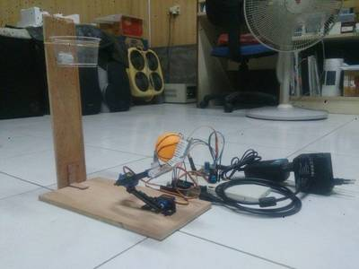

2016-02-04 - Nº 40

Editorial
Aqui está a Newsletter Nº 40 no seu formato habitual. Agora às quintas-feiras. Se gostar da Newsletter partilhe-a!
Todas as Newsletters encontram-se indexadas no link.
Esta Newsletter tem os seguintes tópicos:
No passado fim-de-semana decorreu o encontro de FabLabs nas instalações do fablab Lisboa. O altLab esteve presente e promoveu dois workshops. Foi anunciado neste evento que este ano a Lisbon Maker Faire vai decorrer nos dias 25 e 26 de Junho. Já abriram as inscrições para os projetos.
Esta semana ficámos a saber que a Microsoft está a testar a montagem de datacenters debaixo de agua. O Luxemburgo prepara-se para lançar a base para a exploração e utilização de recursos espaciais. A Cisco anunciou a intenção de comprar a Jasper Technologies. Esta companhia é responsável por ajudar companhias a tirar partido da IoT numa escala global.
Na Newsletter desta semana apresentamos diversos projetos de maker e na rubrica "Documentação" apresentamos quatro livros (eBooks) que podem ser descarregados livremente e que esta semana são sobre Desenho de Compiladores, solução de problemas em Linux, Python para gerir a sua informação e um manual de Vi Improved - editor de ficheiros de UNIX. Também saiu esta semana o Nº 42 da Revista MagPI. Ainda na linha da documentação e por mais 12 dias vai estar disponível no "Humble Book Bunble" uma seleção de livros relacionados com 3D Printing & Drones.
 João Alves ([email protected])
João Alves ([email protected])
O conteúdo da Newsletter encontra-se sob a licença  Creative Commons Attribution-NonCommercial-ShareAlike 4.0 International License.
Creative Commons Attribution-NonCommercial-ShareAlike 4.0 International License.
Novidades da Semana ^
Microsoft research project puts cloud in ocean for the first time
"In 2015, starfish, octopus, crabs and other Pacific Ocean life stumbled upon a temporary addition to the seafloor, more than half a mile from the shoreline: a 38,000-pound container. But in the ocean, 10 feet by 7 feet is quite small. The shrimp exploring the seafloor made more noise than the datacenter inside the container, which consumed computing power equivalent to 300 desktop PCs. But the knowledge gained from the three months this vessel was underwater could help make future datacenters more sustainable, while at the same time speeding data transmission and cloud deployment. And yes, maybe even someday, datacenters could become commonplace in seas around the world."
Luxembourg to launch framework to support the future use of space resources
"The Luxembourg Government announced a series of measures to position Luxembourg as a European hub in the exploration and use of space resources. Amongst the key steps undertaken, as part of the spaceresources.lu initiative, will be the development of a legal and regulatory framework confirming certainty about the future ownership of minerals extracted in space from Near Earth Objects (NEO’s) such as asteroids. Luxembourg is the first European country to announce its intention to set out a formal legal framework which ensures that private operators working in space can be confident about their rights to the resources they extract, i.e. rare minerals from asteroids. Such a legal framework will be worked out in full consideration of international law. Luxembourg is eager to engage with other countries on this matter within a multilateral framework."
Cisco Announces Intent to Acquire Jasper Technologies, Inc.
"Cisco announced today its intent to acquire Jasper Technologies, Inc., a privately held company based in Santa Clara that delivers a cloud-based IoT service platform to help enterprises and service providers launch, manage and monetize IoT services on a global scale. Under the terms of the agreement, Cisco will pay $1.4 billion in cash and assumed equity awards, plus additional retention based incentives. Jasper is the industry’s leading IoT service platform in terms of number of enterprises and service providers; in fact, many of the world’s largest enterprises and service providers are using the Jasper platform to scale their IoT services business globally. With Jasper, companies can connect any device – from cars to jet engines to implanted pacemakers – over the cellular networks of the top global service providers, and then manage connectivity of IoT services through Jasper’s Software as a Service (SaaS) platform."
Ciência e Tecnologia ^
Israeli robot-cleaning system promises brighter future for solar power
"Like the new site, most solar energy farms are located in deserts, where there is plenty of sunlight — which solar panels, of course, need a lot of. But the desert also has a lot of dust, which clogs up the photovoltaic components of the panels, making them less effective in collecting sunlight for conversion into energy. Panels have to be cleaned on a regular basis, but water in the desert tends to be expensive, if available at all — and the use of water to clean the panels raises the costs of production, making solar power too expensive to be considered anything more than a novelty."
-
"LaserPipe is a collaborative project with TWI Ltd, running from January to December 2015, as part of Innovate UK's competition for feasibility studies under the title: "Developing the civil nuclear supply chain". The project is looking into the feasibility of in-bore pipe welding using industrial high-powered lasers, coupled with snake-arm robotics for hazardous or confined space deployment."
New microscope creates near-real-time videos of nanoscale processes

"State-of-the-art atomic force microscopes (AFMs) are designed to capture images of structures as small as a fraction of a nanometer — a million times smaller than the width of a human hair. In recent years, AFMs have produced desktop-worthy close-ups of atom-sized structures, from single strands of DNA to individual hydrogen bonds between molecules. But scanning these images is a meticulous, time-consuming process. AFMs therefore have been used mostly to image static samples, as they are too slow to capture active, changing environments. Now engineers at MIT have designed an atomic force microscope that scans images 2,000 times faster than existing commercial models. With this new high-speed instrument, the team produced images of chemical processes taking place at the nanoscale, at a rate that is close to real-time video."
-
"JQI scientists have achieved a major milestone in simulating the dynamics of condensed-matter systems – such as the behavior of charged particles in semiconductors and other materials – through manipulation of carefully controlled quantum-mechanical models. Going beyond their pioneering experiments in 2009 (the creation of “artificial magnetism”), the team has created a model system in which electrically neutral atoms are coaxed into performing just as electrons arrayed in a two-dimensional sheet do when they are exposed to a strong magnetic field. The scientists then showed for the first time that it is possible to tune the model system such that the atoms (acting as electron surrogates) replicate the signature “edge state” behavior of real electrons in the quantum Hall effect (QHE), a phenomenon which forms the basis for the international standard of electrical resistance.* The researchers report their work in the 25 September issue of the journal Science."
Documentação ^
A documentação é parte essencial do processo de aprendizagem e a Internet além de artigos interessantes de explorar também tem alguma documentação em formato PDF interessante de ler. Todos os links aqui apresentados são para conteúdo disponibilizado livremente pelo editor do livro.
Livros
-
"Introduction to Compiler Design is a textbook is intended for an introductory course on compiler design, suitable for use in an undergraduate programme in computer science or related fields. The book presents techniques for making realistic, though non-optimising compilers for simple programming languages using methods that are close to those used in "real" compilers, albeit slightly simplified in places for presentation purposes. All phases required for translating a high-level language to machine language is covered, including lexing, parsing, intermediate-code generation, machine-code generation and register allocation. Interpretation is covered briefly. The book aims to be neutral with respect to implementation languages, so algorithms are presented in pseudo-code rather than in any specific programming language, and suggestions for implementation in several different language flavours are in many cases given. The techniques are illustrated with examples and exercises."
-
"Two of IBM's leading Linux experts introduce a four-step methodology for identifying and resolving every type of Linux-related system or application problem: errors, crashes, hangs, performance slowdowns, unexpected behavior, and unexpected outputs. You'll learn exactly how to use Linux' key troubleshooting tools to solve problems on your own--and how to make more effective use of professional support services and the Linux community's knowledge. Discover proven best practices for diagnosing problems in Linux environments; Leverage troubleshooting skills you've developed with other platforms; Learn to identify problems with strace, Linux' most frequently used troubleshooting tool; Use /proc to uncover crucial information about hardware, kernels, and processes; Recompile open source applications with debug information; Troubleshoot kernel recompilation problems; Generate stack traces that simplify debugging; Debug applications with gdb, including C++ and threaded applications; Debug kernel crashes and hangs, one step at a time; Understand the Executable and Linking Format (ELF), and use that knowledge for more effective debugging; Assemble your own Linux troubleshooting toolkit. Includes a production-ready data collection script that can save you hours or days in debugging mission-critical Linux systems!"
Python for Informatics: Exploring Information
"The goal of this book is to provide an Informatics-oriented introduction to programming. The primary difference between a computer science approach and the Informatics approach taken in this book is a greater focus on using Python to solve data analysis problems common in the world of Informatics."
-
"Real Linux users don't use GUIs. No matter how popular, slick and sophisticated the interfaces become for Linux and UNIX, you'll always need to be able to navigate in a text editor. The vi editor is the original standard UNIX full screen editor. It's been around almost since UNIX began and it has changed very little. To get around the limitations of vi the people at Bram Moolenaar created the vim editor (the name stand for VI iMproved). It contains many more features than the old vi editor including: help, multiple windows, syntax highlighting, programmer support, and HTML support. All of the books published to date focus on vi alone not the expanded vim shipping with every major Linux distribution. In true New Riders' form, the vim reference will be a definitive, concise reference for the professional Linux user and developer."
Revistas
Do more with your #PIZERO in the MAGPI 42
"It's been a couple of months since we launched issue 40 with the excellent Raspberry Pi Zero attached to the front of it. Since then we’ve seen some excellent projects flying around the internet as you all figure out amazing uses for the tiny Pi. To inspire you to do more we’ve put together another feature in The MagPi 42 of Raspberry Pi Zero projects. From useful things like adding a reset switch to more advanced projects to aspire to like a retro games console located entirely inside a SNES controller, there’s projects for everyone to have a go with."
Modelos 3D ^
Com a disponibilidade de ferramentas que permitem dar azo a nossa imaginação na criação de peças 3D e espaços como o thingiverse para as publicar, esta rubrica apresenta alguns modelos selecionados que poderão ser úteis.
3D-printed Watch with Tourbillon
This is a mechanical watch with tourbillon driven by a 3d-printed mainspring. The watch has a Swiss lever escapement. The mainspring inside the going barrel keeps the watch running for approximately 30 Minutes. Accuracy is roughly one Second deviation within one Minute (depending on print-settings).
The project demonstrates that the 3D-printing technology is developing. Compared with earlier generations of 3d-printers, the process works more reliable and more accurately. However it's still a very advanced project, because printing inaccuracies need to be trimmed manually with some watchmaker skills, or the watch won't tick.
The watch is designed with Autodesk Fusion 360, and printed with Ultimaker 2.
How it's made: https://youtu.be/Go8woPGOggg
Assembly Animation: https://www.youtube.com/watch?v=XiZAEaES2Ng
Assembly Time Lapse: https://www.youtube.com/watch?v=s3p25T6YlQc
Autodesk Fusion 360 Design: http://a360.co/1S4wp4W
Many thanks to Nicholas Manousos for his great article in HODINKEE explaining the importance of my project from a watchmakers perspective. His first 3d-printed Tourbillon 1000% was also a source of inspiration for my work.
Buckle Box, Printable In One Piece
This is my second try at a one piece hinged box with latch. This latch is a little easier to operate than my box design I derived it from. For more information about this box, see the box it was derived from.
I like this latch design a lot. It locks the box closed very nicely and this version I printed as a test, has very nice tolerance at the hinge and at the latch. Now that the testing is over, I can design my real project.
UPDATE: v2 files now how a more tolerant latch. I realized that the tolerance for the latch was mistakenly coded to be half the tolerance of the hinge, since the hinge has slop tolerance for both the mail and female side. The latch should break free much easier on this version. Thanks everyone who printed it out or at least tried.
Fully assembled 3D printable wrench

After watching the infamous video from a few years back where Z-Corp prints a fully working wrench i decided i wanted to do the same thing on my own printer.
Now, i am not talking about a "print-several-pieces-and-then-assemble" version which there are already a ton of on the internet. What i wanted to do was something i could print and that would actually be fully working straight out of the printer. I like to think i came pretty close. All you need to do is to remove the internal support and your done!
Keep in mind this is a proof of concept, i just wanted to see if i could do it.
Updated 2013-10-16: Added "Printable Wrench W Longer Screw" which has a longer "screw" (3mm).
Updated 2013-08-30: I have added two new files. One with a slightly bigger gap between moving parts. This one has 0,55mm gap instead of 0,35mm. Let me know if it works out (in particular with PLA). I have also added a STEP file with no support for anyone who maight want it.
Here is a short video: http://youtu.be/oMmsJVUAK3Q
Experimantal "heavy duty" version: https://www.youmagine.com/designs/printable-wrench-reworked
Projetos Maker ^
Diversos Projetos interessantes.
LED Test Tool with LCD Display
"Most projects include at least one LED. Before soldering the LED, how can you determine if the color and brightness meets your needs? After that, how do you calculate the correct value resistor? Many years ago, I built a handy compact LED testing tool based on the LM317L adjustable current regulator. (You’ll definitely want to click on that link before continuing with this article.) It ended up being one of the most useful tools. In fact, the LED tester sits on a shelf above my keyboard, because I use the tester almost as often as I use my multimeter."
-
"Using an ESP-01 module with the Arduino IDE to make a website monitor. Pictured here is the breadboard which runs 24/7 to monitor this web site."
-
"The classic concept of an hourglass taken into the modern world of electronics. Like the original antetype the electronic hourglass is started by turning it upside down. A nifty simulation of the grains of sand visualises the lapse of time and reacts naturally on the turning of the hourglass. If time has elapsed an optical alarm is issued. Depending on your needs you can implement more specific actions like pulling the tea bag out of your cup. The electronic hourglass excels on its antetype in the ability to adjust the time in intervals of 15 seconds."
WaterPi: Houseplant Remote Watering and Monitoring System
"The system is a suitable solution for people who love and want to look after plants in their house but very busy in daily jobs to do that. Growing plants requires time and effort in order to be successful because there are some regular things to do like watering them every day. People sometimes forget to take care of their plants. Also, some people travel a lot and spend less time in their house. In this context, they generally ask for help to look after their houseplants otherwise they simply give up to have them. WaterPi can help those people with doing regular things for plants. Also, because it can be controlled remotely, plant owners can interfere the watering process easily when needed."
ESP8266 Analog Broadcast Television Interface
"ESP8266 Analog Broadcast Television Interface. Hook an antenna up to GPIO3/RX, tune your analog TV to Channel 3. Power the ESP on! This uses the I2S Bus in the same way the esp8266ws2812i2s project works. Difference is it cranks the output baud to 80 MHz and codes bit patterns into that create effects at around 60 MHz. Please not that this project does not actually output video up at the 60 MHz purposefully. Instead it relies on secondary effects creating enough noise at the VHF Channel 3 mark to make it understandable by a TV."
Operating the Arduino Enigma Machine via Serial Port
"This guide shows how to operate the Arduino Enigma Machine from a computer via serial port. The following instructions can be followed with the touchscreen simulator or with the arduino sketch provided in the post titled Source Code for implementation of Arduino Enigma Algorithm thru Serial Port."
Making A Simple Joule Thief (made easy)
"Today I am showing you how to make a very simple joule thief. A joule thief has many applications, the best gadget that I made with was a "Water Powered Lamp", soon I'm going to post on a guide about it but first I need to post this guide. I used an iPhone 4S as my camera :))) What Is A Joule Thief ? To simplify everything, a "joule thief" is a circuit that helps drive an LED light even though your power supply is low. What can we do with it? We can use it to squeeze the life out of our old, almost drained, non functioning batteries. This project can also be considered as a green and environmental experiment, we can also use it as a flashlight that can be ran by an old, weak, almost drained battery. I even tried to use my water powered battery from my previous instructable the "Water Powered Calculator", the project was featured and displayed in instructable's front page in the "Technologies" category."
GOduino - The Arduino Uno + Motor Driver clone
"I have designed a few robots using the Arduino Uno and the Adafruit Motor Shield. Both are great for prototyping. But I found myself taking my robots apart every time I needed to build another robot. It's not cost effective to buy more Arduino microcontrollers and motor shields for every new robot project. So I decided to design a low cost "run-time" GOduino robot controller that combines the Arduino Uno functionality and, to some extent, the motor shield's. For this guide, I have used a breadboard but could have as well soldered the GOduino on a PCB."
-
"In this project I will demonstrate how a RF FM transmitter works and how this principle compares to the older AM. I will also show you how to build a simple and crude FM receiver which can even sometimes let you listen to your favorite radio stations"
ArTICL: MSP432 Launchpad to TI Graphing Calculator Linking
"A few weeks ago, I received a pair of MSP432 Launchpad development boards courtesy of Texas Instruments, and two weeks ago, I began porting ArTICL to the MSP432. I'm happy to announce that ArTICL is now available to MSP432 Launchpad programs. First developed last year as an upgrade to my much-used but unpolished Arduino-TI calculator linking routines, ArTICL offers an easy interface to communicate between TI calculators and microcontroller development boards. ArTICL (which stands for Arduino TI Calculator Link) lets TI-83 Plus, TI-84 Plus, and other TI graphing calculators send and receive numbers, lists, strings, pictures, and other data types by making the Arduino or MSP432 emulate another calculator or a CBL2 device. ArTICL also includes five example programs that demonstrate how it can help graphing calculators interface with LEDs, sensors, motors, and more. Four of ArTICL's five demo programs have been made cross-compatible with the MSP432 Launchpad: ControlLED, Screenshot, ReadAnalog, and TypeLetter. ControlLED lets your calculator control the LEDs on the MSP432 Launchpad by sending a one-element list. Screenshot takes a screenshot of the calculator's screen when you press pushbutton P1.0 on the Launchpad, and dumps it as ASCII art to the Launchpad's serial interface. ReadAnalog returns the values of six analog pins on a scale from 0 to 1023 (0v to 3.3v). Finally, TypeLetter sends a remote keypress to the calculator twice a second, instructing it to type 'M' (or any other letter). "
Graphics on Nokia 5110 Lcd using Arduino
"In this short instructable I am gonna displ some graphics on Nokia 5110 LCD using ARDUINO UNO R3 this is very helpful for beginners's here is a testing video."
-
"Voting systems are one of the finest examples of Embedded devices and applications. The complexity and robustness of a voting system depends on the number of voters involved. Here you could see a simple Arduino based voting system that would be a great fit for small-scale elections such as in schools or colleges. This system was designed to ensure security and the coolest thing is the whole voting process can be done with assembled hardware and Arduino IDE."
DIY Cheap Thermostat Oven for 3D Filament Moisture Remover
"One of the cheapest method to put digital thermostat in the old mechanical oven. Total upgrade cost 15 Dollars."
Data Logging Temperature Probe (-200 °C to +1300 °C)
"I needed to take temperature vs. time measurements for a piece of research equipment in order to determine how much time in advance someone should start prepping before they actually intend to use the equipment. In this case, prepping involves cooling down a metal thermal mass using liquid nitrogen in order to trap moisture in the surrounding air space via condensation."
-
"Its home appliances remote controller, you control anything under between 500 ft from a center point to all direction. mainly its suitable for home appliances l.e, fan, T.V, bulb, A.C, etc. you can control four object at a time. its a programming device. there is no need to any type of micro controller and programming. its work on radio frequency. "
DIY Laptop Table - Using Limited Tools & Plywood
"I have been needing a laptop table for a long time now so it was about time I got to making one. I was very kindly sent some of skils tools to try out so I thought this would be the perfect project to put them through their paces. You dont need a workshop full of tools you can make this with a limited amount of tools."
How to display images on 2.4inch TFT and make it a digital photoframe
"I really had this desire to build a digital photoframe from last three ,Until This January when i got this tft lcd touch module .I was excited but when i looked on the internet found very few (sorry none) help regarding it only JoaoLopesF instructable was there but the bitmap sketch had not been working so i cracked it as a challenged debugged it and made a working sketch."
Simon Says with LEDs and sound
"Many of us have all played Simon Says where inevitably you find yourself hopping around on one foot while making elephant noises and you wonder to yourself why it was ever a good idea to say "yeah, I'll come play". But perhaps while you could do without the mild amount of embarrassment, you still find yourself wishing you could play a game of Simon Says a little more often, even if it was just in the form of a microcontroller project. If so, you're in luck! This project takes the classic Simon Says game and implements it with both LEDs, sound effects, as well as a pair of different game modes."
-
"For this prototype I decided to stay with plain old through-hole packages and build the analog part in a modular way. The restriction to through-hole packages had a great influence of what parts I could use because most of the good stuff is in SMD these days. On the top I’ve used a XuLA-200 FPGA board. A really nice breakout for the Spartan 3A FPGA family. The analog part consists of (left to right): LT1227 current feedback OpAmp as the main SWP transceiver, good old LM311 as a one-bit A/D converter (to slow for high-speed SWP, but good enough up to 400 kbit/s). On the right there is a local power supply based around the LT1054 to generate the supply voltages for the OpAmp."
-
"The original version of my hot tub controller starting having some problems which ended up being caused by an animal chewing through the control cables. I never liked having that huge bundle of cables running all the way across the back of the house, so I now have a new controller in a waterproof enclosure mounted right next to the hot tub."
-
"The mini wave model is small but mighty. With just a few minutes of set-up, it's just as good at demonstrating as its bigger siblings. This is a great model for waves that move, reflect, stand, and wiggle, perfect for a starter project in classrooms learning about waves and motion."
Multiple Fermenter Temperature Control With Arduino
"Temperature control is often considered one of the top five steps towards brewing better beer. There are numerous methods for keeping fermenting wort at the optimum temperatures from wrapping a carboy in a blanket to keep it warm in the winter to a wet towel to keep the carboy cool in the summer. One of the challenges a fellow brewer and I encountered was how to keep two different sized carboys warm during the winter. Most fermentation temperature controllers available through the local homebrew shops have only a single temperature probe and one electric switch."
ShotBot - Arduino Powered Pump Project
"This Arduino Pump Tutorial is known as the ShotBot Project, demonstrating an easy way to build a simple shot pouring robot. We use two RobotGeek Pumping stations and some quick code to create a dual shot pouring robot. This project uses buttons to trigger the pouring as a basic example, but the buttons could be replaced with more advanced sensors, such as switches, light sensors, or IR sensors. You can follow the directions here, or find this project on the RobotGeek Learn site in two parts: The RobotGeek Pumping Station Assembly Guide, and the Arduino Pump Tutorial."
Arduino MPPT solar charger shield
"A friend has approached me regarding his solar project. He wants to install a solar panel together with a battery and an inverter in order to have power at his allotment garden. He had looked at a hobbyist project where an arduino was used to build a MPPT (maximum point of power tracking) charge controller. I took a look at the design, liked a lot of what I saw and decided to build something similar."
-
"Make your own mini light seeker robot."
Mechatronic Basketball Shooter

"Seeing my Arduino Arm (for Office Catapult) laying around, I was thinking "What else can I do with it?" At the moment I was having my Basketball ring renewed. I need to move my body a little, rather than just sitting in the office. Then this Mechatronic Basketball Shooter crossed my mind."
That's all Folks!